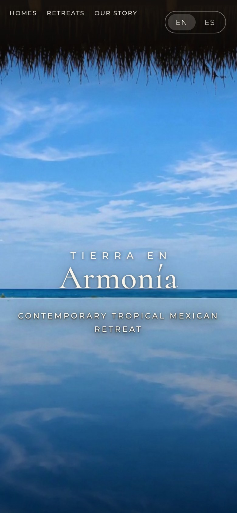
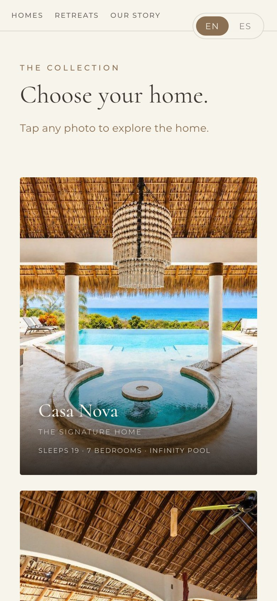
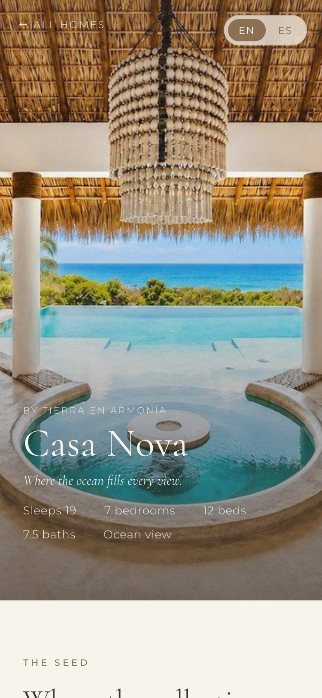
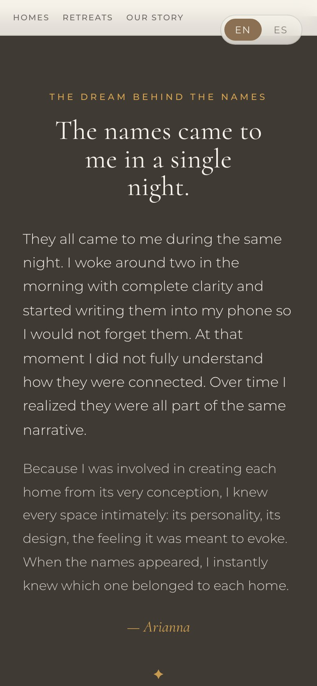
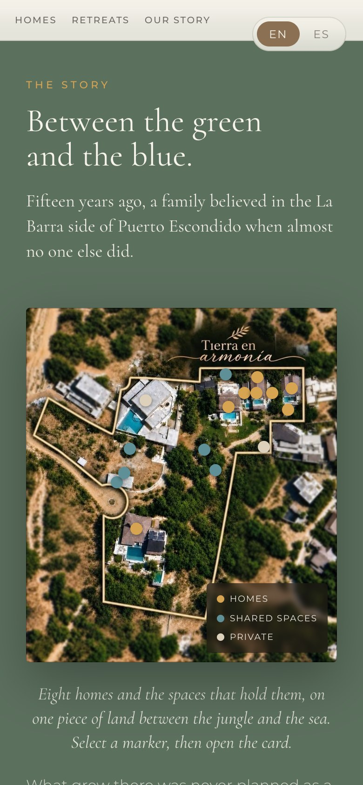
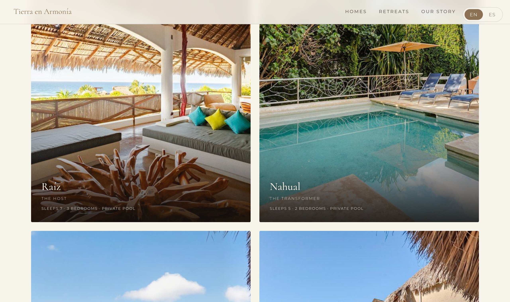

A collection of eight homes on one piece of land, with nature all around, animals, a path down to the beach, a gym, and a garden.
It is a whole place to be in, not just a place to sleep.
Arianna had the story and the ideas. What she did not have was a way to organize all of it, or to show a visitor what makes this place different from anywhere else they could stay.
And eight homes is a lot to hold together. Eight sets of photos, eight personalities, eight kinds of information, all needing to feel like one place, without any single house losing what makes it its own.
We built the whole property a home online: one identity that holds all eight houses, a page for each with its own character, the land and its story, and a simple way to ask about a stay. Not a guide bolted onto a listing, a place of its own.




And the touches that make it feel effortless.

A hand built map of the land itself. Every home and shared space is a marker a visitor can tap to open, so eight houses on one hillside finally make sense at a glance.
Every inquiry button opens WhatsApp with the message already written, and it knows which home they were looking at. Reaching out takes one tap, and Arianna knows what they are asking about before she reads a word.
The whole site lives in English and Spanish, a tap apart, so guests from anywhere and neighbors from down the coast each read it in their own language, with nothing lost between the two.
Casa Nova, Raíz, Copal, Arrazola, Nahual, Tonal, Ensueño, Tilcajete. Eight names that came to Arianna in a single night, gathered on one page where a visitor can choose the home that calls them.

Each house has its own identity, but everything still belongs to Tierra en Armonía.
It felt much more personal than just someone building a website or a digital guide.
It finally feels like the online version of what we have created here.
Eight homes brought online as one property. Built together with Arianna over several rounds, until it felt like the place itself.